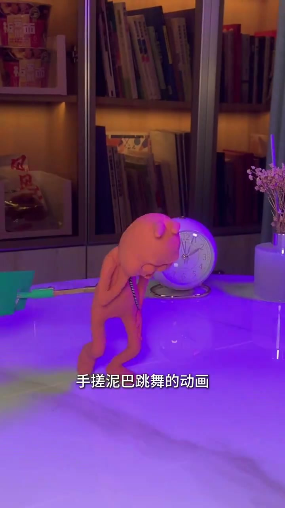
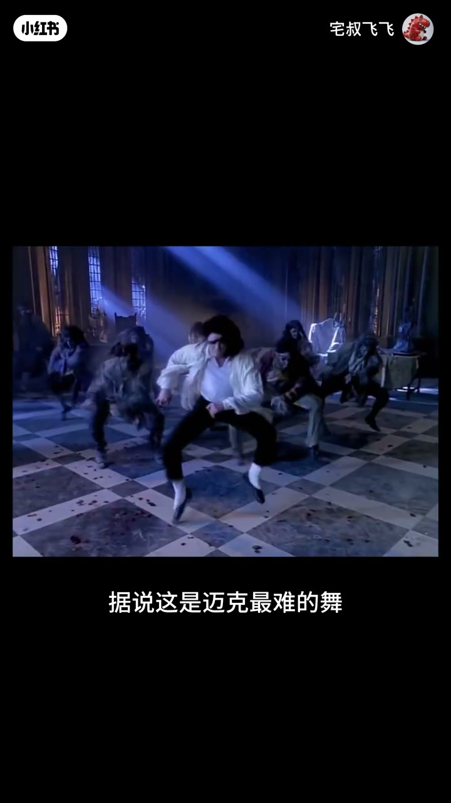
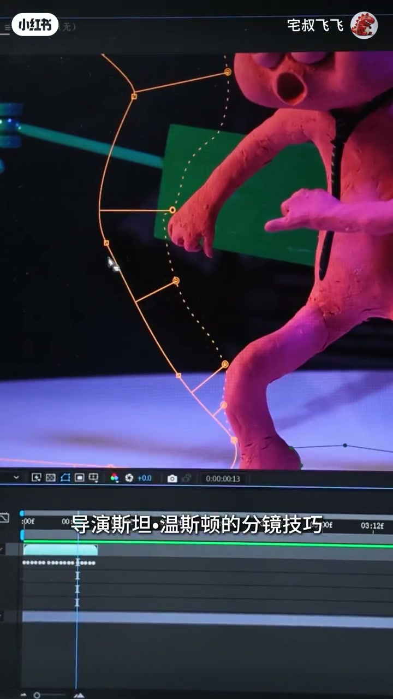
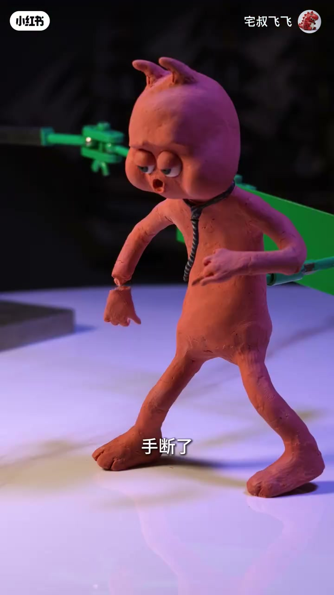
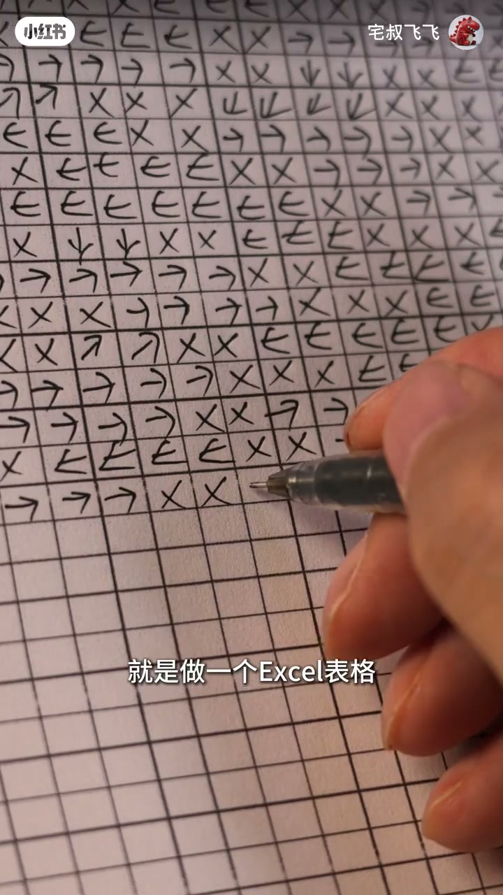
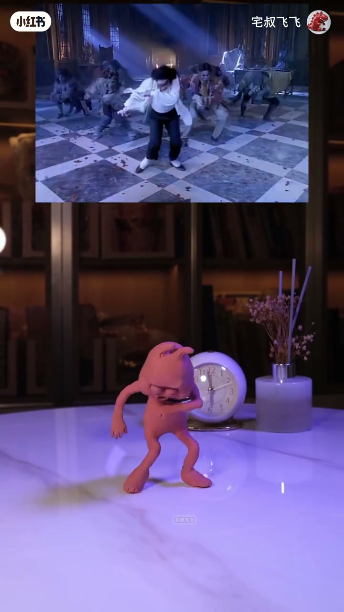

内容要点
作者要回答的是：这段被他说成「最难」的舞，用手搓定格还起来时，难在泥巴会裂、支架要抠，还是难在耳朵和领带不肯听话。
知识结构
依画面，字幕先说这是一个月手搓的泥巴跳舞，挑战对象写成迈克的《too bad》，并称据说这是最难的舞。幅度一大，泥偶就会开裂。
依画面，这次有 17 段分镜。对日常影像也许不多，对定格却意味着不停挪机位、再拍 17 个空背景，每段还要重新抠支架。作者说这样能学到斯坦·温斯顿的分镜。
依画面，定格按 1 秒 24 张照片。快的一张大约 3 分钟，慢的要 10 到 20 分钟。手断了、泥巴倒了还能补；机位一挪，整段得重拍。
依画面，幅度大到耳朵和领带像要飞起来。作者用方格纸记方向和停几帧，并说这套记号可能只有他自己看得清。
依画面，大约半分钟没有字幕。上方是大厅里的群舞，下方泥偶在桌面上摆相近的屈膝和前倾。结尾希望你喜欢，并说下期见。
还原这段舞的成本，主要不在记舞名，而在 24 帧、17 段空背景，以及耳朵、领带这种软零件的逐帧方向。
一个月捏出来的挑战
00:00–00:20。视频未交代拍摄日程表。笔记文案写前前后后花了一个多月，标题又写爆肝 30 天，两处都是作者自述，不是计时记录。开场依画面，字幕把片子定义成「这是我用一个月时间手搓泥巴跳舞的动画」。

泥偶是橙红色，细四肢，脖子上一条细领带，站在会反光的桌面上。紫光从低处打过来，背后能看见圆钟、干花和书架。这是家里的台面，不是剧场舞台。
紧接着字幕换成挑战对象。依画面，00:06 写「这次挑战的是迈克的《too bad》」。笔记话题也是 toobad。片中没有人口播解释歌名怎么拼，正文只保留画面上的写法。

00:10 的对照画面是一位穿白衬衫、黑裤、白袜的舞者，在格子地面的大厅里把膝盖打开、蹲在脚尖上，蓝色光束从上方打下，身后还有深色服装的群舞。字幕用的是「据说」，所以「最难」是作者转述的说法，不是这条片子测量出来的难度排名。
回到泥偶以后，依画面，字幕说对于嘟巴兔这是个不小的挑战：动作幅度大一些，它就会开裂。00:19 字幕直接写成「开裂」。角色名嘟巴兔与笔记文案一致。Whisper 开头听成「走出泥巴」，和字幕「手搓」不是同一句，正文采用字幕。
十七段分镜把一天拆碎
00:20–00:46。依画面，作者说自己面临的新挑战是：这次有 17 段分镜头。这个数量对日常影像「应该是非常少的」，但了解过定格的人会知道，这意味着除了不停挪动机位，还要拍 17 个空背景，每一段都要重新抠支架，工作量增加不少。笔记文案写的是「17 段扣背景」，和画面字幕「抠支架」不完全一样。正文分开记：画面说的是抠支架，笔记文案说的是扣背景。
00:35 能看见一台富士相机的特写，字幕停在「还需要拍 17 个空背景」。空背景是为了事后把撑住泥偶的架子去掉。架子本身在后面「手断了」那一帧的身后也能看见，是绿色的支撑件。

00:43 切到电脑。预览窗里泥偶张着嘴，身上叠着橙色轨迹，像在对照前后帧的路径；下面是剪辑时间线。字幕写「不过，这也确实能够学习到该片导演斯坦·温斯顿的分镜技巧」，下一秒缩短成「导演斯坦·温斯顿的分镜技巧」。作者把多机位、多空镜当成临摹分镜的办法，而不是只在临摹单一舞姿。
依画面字幕：定格动画 1 秒 24 帧，也就说嘟巴兔每一秒的动作需要由 24 张照片组成。
00:30 附近 Whisper 吐出一串「或者除了」，和同时字幕「这意味着」对不上，不采用。这段口播缺口用画面字幕补上。
一张照片的分钟，和三种坏法
00:46–01:20。依画面，快的时候一张照片大约 3 分钟，慢的可能要 10 到 20 分钟才能调好。制作过程往往不顺利。00:53 能看见两只手按着泥偶的头和肩，字幕就停在「一张照片快的需要 3 分钟左右」。

事故被分成可以补和必须重来的两类。依画面，01:00 字幕是「比如」，01:02 是「手断了」：泥偶保持宽站姿，条纹领带还挂着，一只手已经离开手腕，悬在身体侧面。01:05 字幕是「泥巴倒了」。作者接着说这些都还好，花点时间调整就行。
他更怕的是机位产生位移。依画面，01:13 到 01:15 的字幕说，机位一挪，就意味着这段需要重新拍摄。经验多了以后，他学会离设备远远的。01:13 作者本人出镜，白 T 恤，字幕只有一个「哦」，像是接上一句怕什么。这里没有演示一套防抖流程，只给出这个习惯。
耳朵和领带要单独记帧
01:20–01:44。身体大动作之外，依画面还有一个难点：动作幅度太大，嘟巴兔的耳朵和领带属于要飞起来的状态。作者问，那怎么才能让它符合自然的物理规律。

办法落在纸上，不在屏幕上。01:33 能看见方格本，格子里重复着向右、向下的箭头和叉号，手正在补一个叉。字幕说「就是做一个 Excel 表格」，下一句是「专门用来记录耳朵和领带的方向以及停留的帧数」。Whisper 把这句听成「UXL 的表达」和「情有的真实」，与画面不符，正文不采用。表格记的是方向和停几帧，不是力学公式。
依画面，01:38 前后字幕发糊，Whisper 在这里相对清楚，大意是：不过这可能只有我自己才能看得清楚吧。纸上的符号没有图例，读者无法从这一帧反推每个箭头代表哪一侧耳朵。作者自己也把可读性收窄到本人。
01:40 字幕换成「好了，嘟巴兔排练的差不多了」，01:42 是「让我们一起来看看成片」。排练在这里结束，后面不再解释记号。
成片对照，没有逐拍讲解
01:44–02:24。依画面，从约 01:44 到 02:14 字幕消失。这段只能按画面写。

布局是上下对照。上方仍是那座有格子地面和蓝色光束的大厅，舞者做前倾或屈膝的群舞；下方泥偶站在同一张大理石纹桌面上，圆钟和干花还在，姿势跟着换成相近的屈膝、低头、前倾。没有口播指出这是哪一拍，也没有标出和原片差了多少帧。能确认的只是：泥偶在模仿上方画面里的身体大形，场景仍是作者的书桌，不是复刻大厅布景。
02:15 字幕回到「希望你能喜欢这个视频」，02:17 是「我们下期再见」。作者再次出镜，白 T 恤，身后架子上有一只红色小泥偶。Whisper 的收尾「希望你很喜欢这个视频，我们下期再见」和这两句字幕同向，用字略有差别，正文采用画面字幕。
笔记文案还写到：嘟巴兔跳起来的那一刻，作者觉得看见了偶像的影子，并致敬迈克尔·杰克逊。成片段本身没有这句旁白，它留在笔记说明里，不写成片中口播。